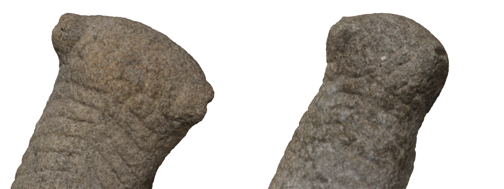
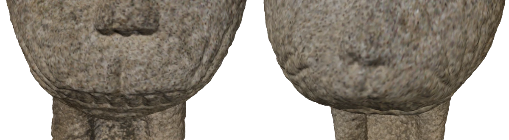
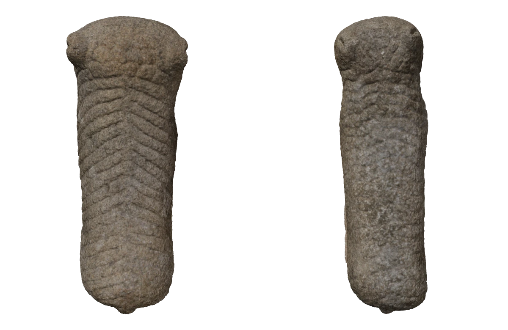
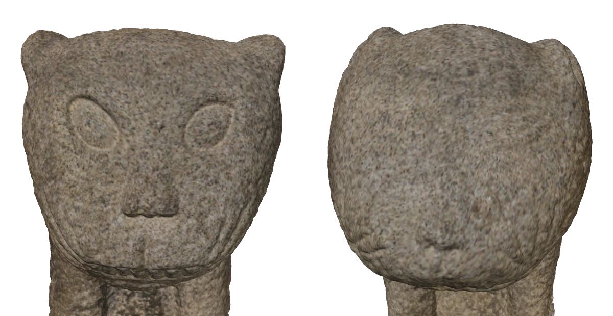
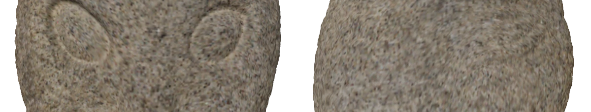

Index · 01
3D 스캔과 분석
사용 도구 · Artec Leo · Artec Studio
여러 방향의 기록을 하나의 모델로

스캔에서 찾은 다섯 가지 특징
표면색을 제외한 스캔 모델로 조각의 굴곡을 살폈습니다. 각 항목의 아이콘을 누르면 컬러·흑백·노멀 맵을 차례로 비교할 수 있습니다.
봉황동 석사자 3D 스캔 · 왼쪽 수사자, 오른쪽 암사자
-
갈기
정수리·목 뒤 · 위쪽 사선
갈기의 개수와 배치, 음각·양각의 차이를 비교합니다.

수사자암사자 -
수염
입 주변 · 정면 확대
수염의 개수와 길이, 휘어진 모양을 비교합니다.

수사자암사자 -
등무늬
목 뒤·등 · 위에서 내려다보기
등무늬의 개수와 굽은 방향을 비교합니다.

수사자암사자 -
이목구비
얼굴 전체 · 정면
귀·코·입의 크기와 배치를 비교합니다.

수사자암사자 -
눈매
눈 주변 · 정면 확대
눈꼬리의 방향과 눈의 윤곽을 비교합니다.

수사자암사자